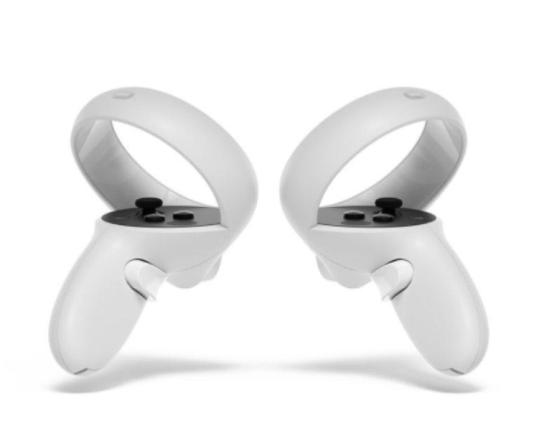

VR Glasses light

Трэкинг и железо
Трехмерное отслеживание. Предупреждение о стенах. Отсутствие проводов и мощный процессор. Возможность подключения к Пк или использования самостоятельно

Управление
2 универсальных контроллера, для отслеживания рук. Геймпады имеют физические кнопки для улучшения вашего игрового опыта
Технические характеристики
Fast-Switch LCD Display 1832 x 1920 Разрешение на глаз 60, 72, 90 Hz Частота обновления Совместимо с очками 3.5 мм джек, для наушников. Встроенные объемные динамики 128 или 256 ГБ памяти 2 года гарантии Гибкая настройка межлинзового расстояния
Комплект поставки
Шлем, кабель зарядки. 2 манипулятора. Инструкция по эксплуатации. Салфетка для линз.
Оформить заказ
Бесплaтная доставка